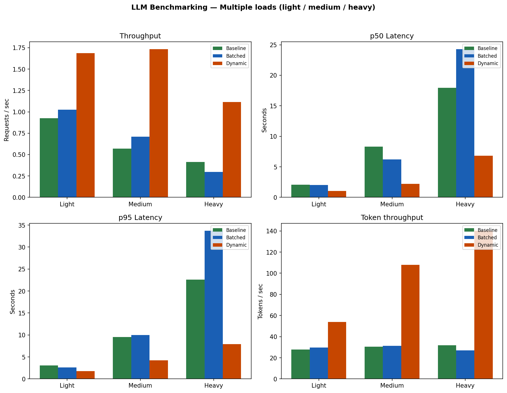

Systems-Level Optimization of LLM Inference on a Single Consumer GPU — What We Do & What We Achieved
See the flow below; the visuals show both how we run the benchmark and the results.
What we achieved (at a glance)
flowchart LR
subgraph Base["Baseline"]
B1["0.57 req/s"]
B2["8.3s p50"]
end
subgraph Dyn["Dynamic batching"]
D1["1.73 req/s"]
D2["2.2s p50"]
end
Base -->|"~3× throughput"| Dyn
Medium load (30 req, 5 conc, 64 tok). Dynamic batching gave ~3× more req/s and ~4× lower latency than baseline on the same GPU.
Result by load
0.93 → 1.69
Light: req/s (baseline → dynamic)
0.57 → 1.73
Medium: req/s
0.41 → 1.11
Heavy: req/s
29 vs 20
KV cache: tok/s (on vs off, 128 tok)
Charts (from our run)

Baseline vs Batched vs Dynamic across light / medium / heavy. Full report: report/benchmark_report.html.
Live 3D: Requests → Batcher → GPU → Results
One Requests (load) connects to all three; flow moves separately into Baseline, Batched, Dynamic. Increase load to see flow and blocks grow.
Runs like a video: load increases automatically, so sizes and flow grow over time. Three blocks; flow lines show Requests → Batcher → GPU → Results. Slider can override load.
BaselineBatchedDynamic
Requests
Batcher
GPU
Results
KV Cache
Load5
Baseline—
Batched—
Dynamic—
1. How we run it — two terminals + browser
flowchart LR
subgraph T1["Terminal 1"]
U[uvicorn server]
U -->|"listens on :8000"| P[(Port 8000)]
end
subgraph T2["Terminal 2"]
L[load_generator.py]
end
subgraph B["Browser"]
W["localhost:8000"]
end
L -->|"50 requests"| P
W -->|"Try Generate / Health"| P
P -->|"responses"| L
P -->|"HTML / JSON"| W
Terminal 1 runs the server. Terminal 2 runs the load test. Browser opens the same server to try the API by hand.
2. What happens on one request (API → GPU)
sequenceDiagram
participant C as Client (browser or load gen)
participant S as Server (FastAPI)
participant M as Model (GPU)
C->>S: POST /generate { prompt, max_new_tokens }
S->>M: tokenize(prompt)
M-->>S: input_ids
S->>M: model.generate(...)
M-->>S: output token ids
S->>M: decode tokens
M-->>S: text
S->>C: { text, num_tokens }
Each request is tokenized → generated on GPU → decoded → sent back. The load generator measures how long this takes (latency) and how many we can do per second (req/s).
3. Why dynamic wins — Baseline vs Batched vs Dynamic
Baseline: one request = one GPU run. Batched: many requests are grouped into one GPU run, then split back into separate responses.
4. How we switch servers (one at a time)
flowchart LR
A[Start baseline server] --> B[Run load test in Terminal 2]
B --> C[Note results: req/s, p50, p95]
C --> D[Stop Terminal 1 - Ctrl+C]
D --> E[Start batched server in Terminal 1]
E --> F[Run same load test again in Terminal 2]
F --> G[Compare numbers]
We only stop Terminal 1 when we want to run the batched server. Same port 8000, so we must stop the old server first.
5. What we measure → what we learn
flowchart TB
subgraph Input["We run"]
L[Load generator: 50 requests, 20 concurrent]
end
subgraph Output["We get"]
O1[req_per_sec]
O2[p50_latency_sec]
O3[p95_latency_sec]
O4[tokens_per_sec]
end
subgraph Goal["We learn"]
G[Does batching improve req/s and latency?]
end
L --> Output
Output --> G
Same load test on baseline and batched server → compare the numbers → see how much batching helps (main goal).
6. Benchmark setup (what we compare, where results go)
What we compare
flowchart LR
subgraph LG["Load generator"]
GEN[same config]
end
subgraph Servers["Servers (run one at a time)"]
B[Baseline\nmain.py]
BT[Batched\nbatched_server.py]
D[Dynamic\ndynamic_server.py]
end
subgraph KV["Separate experiment"]
KVC[KV cache\n32 / 64 / 128 tok]
end
GEN --> B
GEN --> BT
GEN --> D